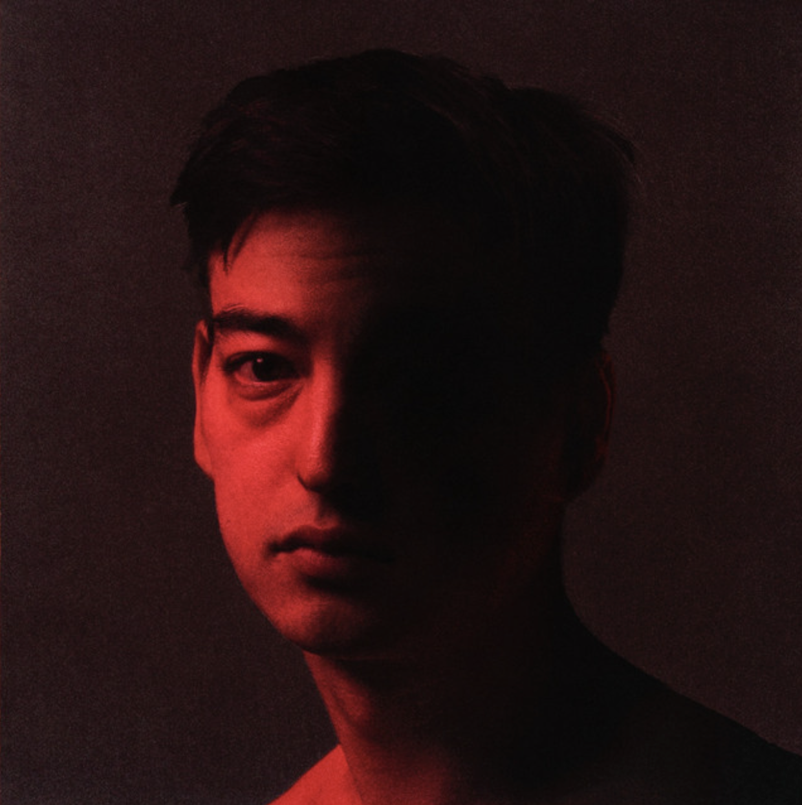

Music Video

Go ahead and bark after dark
Fallen star, I'm your one call away
Motel halls, neon walls
When night falls, I am your escape
When you lay alone, I ache
Something I wanted to feel
If you've been waiting for fallin' in love
Babe, you don't have to wait on me
'Cause I've been aiming for heaven above
But an angel ain't what I need
Not anyone, you're the one
More than fun, you're the sanctuary
'Cause what you want is what I want
Sincerity
Souls that dream alone lie awake
I'll give you something so real
If you've been waiting for fallin' in love
Babe, you don't have to wait on me
'Cause I've been aiming for heaven above
But an angel ain't what I need
Pull me, oh, so close
'Cause you never know
Just how long our lives will be
If you've been waiting for fallin' in love
Babe, you don't have to wait on me
'Cause I've been aiming for heaven above
But an angel ain't what I need